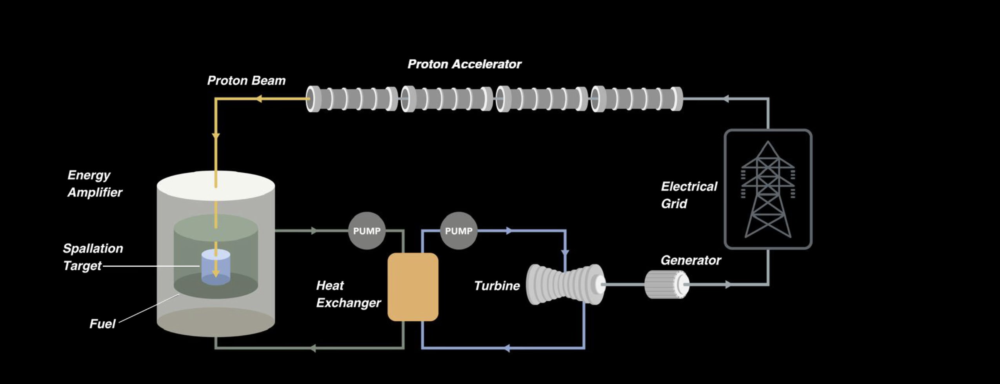

Systems
Fast & Safe Nuclear Energy
to Power America
The energy amplifier: fission driven by a particle accelerator, with no potential for criticality in normal operation or off-normal conditions.
Revolutionizing
Accelerator
Technology

About Us
Nuclear energy with an off switch
Subcritical Systems is a company in Austin, Texas bringing the energy amplifier concept to the US to safely generate electrical power. Energy Amplifier consists of a particle accelerator to sustain fission of nuclear fuel in a subcritical core generating power. There is no potential for criticality in both normal operation and off-normal conditions.
Founding team of entrepreneurs that built companies with cutting edge technologies and scientists that have co-invented the concept. Financially backed and hiring now.
How this is different from other nuclear approaches
Hover / focus to expandConventional reactors keep a self-sustaining chain reaction going and rely on control rods and cooling systems to prevent it from running away. Fusion reactors join atoms together and have not yet delivered commercial power. The energy amplifier does neither: a particle accelerator supplies the neutrons that keep fission going in a core that is deliberately built to fall short of sustaining the reaction on its own. Turn the accelerator off, and the fission stops. See the full comparison below.
Technology
How the Energy Amplifier works
A particle accelerator fires protons at a target, releasing a burst of neutrons. The neutrons enter a fuel core built to fall short of a self-sustaining chain reaction, so it fissions only while neutrons keep arriving. The heat drives a standard steam turbine. Turn off the accelerator, and the fission stops.

Hover or tap any part of the diagram above to see what it does — and flip the beam switch to see why turning it off stops the fission.
Comparison
Fission vs. accelerator-driven vs. fusion
| Conventional fission | Energy amplifier (ADS) | Fusion | |
|---|---|---|---|
| What drives it | Self-sustaining chain reaction | Accelerator supplies the neutrons | Superhot plasma joins light nuclei |
| Can it run away? | Yes, if control and cooling fail | No — it cannot go critical by design | No chain reaction to run away |
| How you stop it | Control rods | Turn off the beam | Conditions collapse on their own |
| Fuel | Uranium | Fissile fuel | Deuterium and tritium |
| Status in 2026 | Mature — ~440 reactors worldwide | No commercial plant yet; demos due ~2027 | Lab net gain in 2022; no grid power yet |
| Main obstacle | Meltdown risk, cost, licensing | Accelerator cost and reliability | Sustaining net energy, materials, tritium |
It does the same fission as today's plants, but it cannot run away, because the accelerator — not the fuel — keeps it going.
Inherent Safety
Since the particle accelerator provides a simple on-off switch for the fission process, the core cannot reach criticality.
Cheap Power
Targeting cost competitive with natural gas, promoting affordable, clean energy at scale.
Uses Existing Technology
No new physics required — the engineering path builds on proven accelerator and fission technology.
FAQ
Common questions
No. The energy amplifier uses fission, the proven way nuclear plants make power today, and makes it inherently controllable. Fusion joins atoms instead of splitting them and has not yet put power on a grid. Subcritical needs no new physics.
A subcritical core is deliberately built without enough fissile material to sustain a chain reaction on its own. It only fissions while an outside neutron source — the particle accelerator — keeps feeding it.
Spallation is what happens when a high-energy proton beam strikes a heavy target: the impact knocks loose a shower of neutrons, which then drive fission in the surrounding fuel.
The core is designed so it cannot go critical, which removes the run-away chain-reaction risk of conventional reactors. Fuel still gives off decay heat after shutdown, so the plant also includes passive decay-heat removal — full safety documentation will accompany the NRC license application.
It's the existing NRC framework for fuel cycle facilities. Subcritical plans to license its subcritical core under Part 70 and its accelerator separately under Part 30, rather than the longer Part 50 reactor-licensing process.
Team
Team
We move faster, think outside of the box, hold ourselves to the highest standards of excellence and scientific rigor, and cross-hybridize from different fields.
Previously founded and led Curative, scaling it through the COVID-19 testing era.
Physician turned deep-tech entrepreneur; co-founder of Subcritical Systems.
Former Director, DOE Thomas Jefferson National Accelerator Facility; held senior accelerator roles at Argonne, Fermilab and Oak Ridge.
Names and titles above are drawn from public NRC filings and press coverage — please confirm current titles, add real headshots, and tell us which additional founders/scientists to include before this goes live.
Careers
Join the Subcritical team and help pioneer fast, safe nuclear energy
If you have resilience, ambition, passion and work ethic and are interested in what we do, please get in touch — we are actively growing our team.
Nuclear Engineer
Cryogenic Engineer
Senior Mechanical Design Engineer
Software Engineer
Get in touch
Find your path
Utilities & Data Centers
Exploring safe, dependable baseload power for your operations.
Talk to our team →Investors & Partners
Learn about our technology, licensing progress, and funding round.
Request a briefing →Regulators & Policy
Read our public NRC engagement plan and licensing milestones.
See our press coverage →Whats New
Latest updates
Subcritical Systems Secures Clear Regulatory Path with U.S. Nuclear Regulatory Commission
Jan 30, 2026Subcritical Systems achieved a major milestone by confirming with the NRC that its Energy Amplifier technology can be licensed under existing regulatory frameworks (10 CFR Part 70 and Part 30), eliminating the need for new rulemaking and significantly accelerating the path to commercialization. The announcement follows productive engagement with NRC staff and legal guidance from former NRC Commissioner Jeff Merrifield, positioning Subcritical Systems to lead U.S. deployment of accelerator-driven subcritical nuclear energy systems while similar projects advance in Europe and China.
Read more →Speedrunning the NRC
Jan 30, 2026"For 30 years of VC, we have avoided any nuclear energy startup that had to pass the slow and expensive gauntlet of NRC Part 50 regulation. We finally found a bypass with subcritical fission, and the NRC agrees. This means they could bring their inherently-safe reactor online well before more traditional designs." — @FutureJurvetson
Read more →Contact
Talk to Subcritical Systems
Subcritical Systems Inc.
8602 Lava Hill Rd, Austin, TX 78744
press@subcritical.com